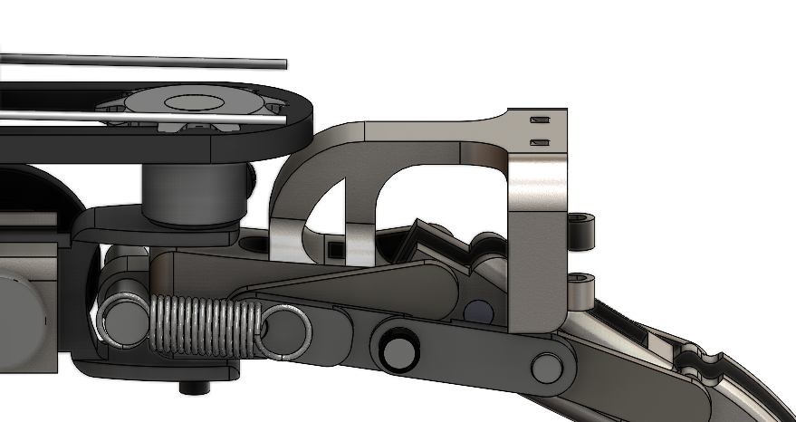

Robotic Hand / Prosthetic

Introduction
I wanted to try to create a new design for a prosthetic hand that has more degrees of freedom and strength than the most common types of prosthetic hands. Although this does not look nearly as good and is significantly larger than the current prosthetic hands being sold.
Finger Design
Each of the fingers has the splay controlled by a servo through a chain drive, the top two sections of the finger controlled by a stepper motor through a pully system, and the lowest section of the finger is controlled by a stepper motor through a chain drive.
The two pully wires go through the 4 holes in the picture and connect to the black rings on both sides (Not pictured because I don't know how to model string motion). So when the stepper motor spins, the attached spool will pull in causing the finger to close. When the spool is spun back the extension spring which should be attached to the black ring then causes the finger to return to its normal position.
The connectors placed between the two finger parts are so they move together when they curl or extend.
This raised section aligns the pully string in the correct position to close the finger as well as create a flat knuckle area to match the sprocket.
The motor placed at the end connects with the sprocket and can move the second part of the finger down.
The other sprocket is not connected. I'll explain what is happening later on.
The servo then tilts the finger using a similar belt system.
As seen before the sprocket disconnects when the finger tilts forward meaning that the finger can no longer tilt when bent. However, I solved this problem by putting the servo in a slot that can slide forward. So, when the finger bends one end of the belt curves around the rollers and moves with the finger while the servo slides. The added spring causes the finger to return to its original position more elastically.
These rollers.

A close up view of the pully motor.
Hand Design
Each of the fingers is connected by this rod going through both finger parts.
The thumb then connects similarly.
As seen the hand has a few problems in both look and functionality. First of all, it is really wide (about 2.9 in more than average) and does not have the normal hand shape with the fingers tilting towards the center of the hand. This is because the current motors I am using take up a lot of space, so I am currently trying to find a better alternative. The main functionality concern is that due to the wide hand the tumb has lost a lot of purpose. I plan to fix this along with the wideness issue.
I am still waiting for EMG sensors and the 3D printer to test out the hand in a realistic scenario.
Strength Calculations
For the materials, I am planning to have it mostly 3D printed with the important parts such as the fingertips and connectors being aluminum. The stepper motors make up a large percentage of the weight, but I can't find a better and cheaper alternative, so I'll calculate the weight including them for now.
Rough estimates lead to about 4.1 pounds for the electrical components and 7.3 pounds for the materials for a total of about 11.4 pounds which is a lot. However, because the fingers are completely 3D printed I am considering the weight to be negligible.
For the first finger section the two springs have a force of 24.909N together (calculated for each spring by using Hooks law and multiplying 700.47N/M by 0.0178M). The motor has a torque of 13Ncm and is connected to a 1:8 ratio gearbox making it 104Ncm. It is hooked up to a .5in pully belt making it 81.89N for each motor. Calculating in leverage the total grip strength would be around 94.077N or 21.149 pounds per finger For context the average person's grip strength is around 75N per finger so it's a close match.
Future Plans
I am still waiting to get my EMG sensors to try this out as a prosthetic hand, but I will update this page with a working hand when I do.
Mechanical Design AI Mechanical Engineering Electronics